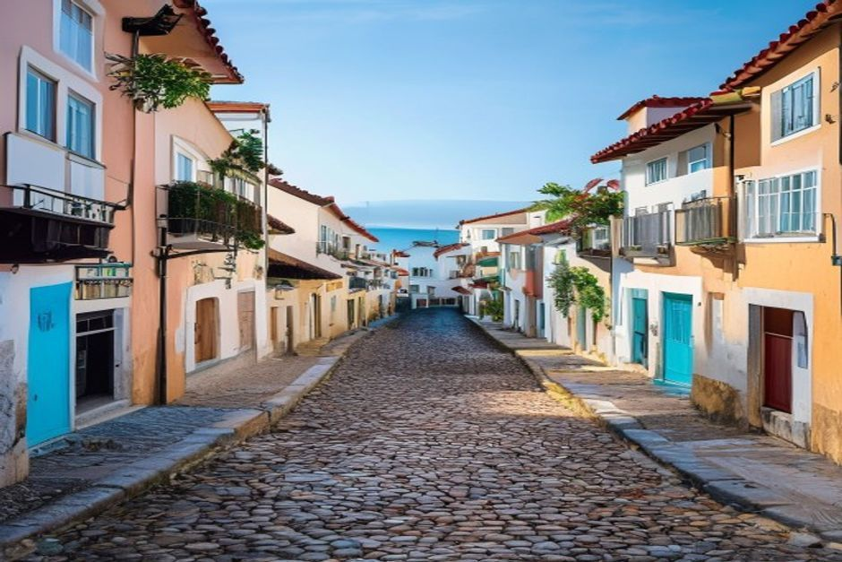
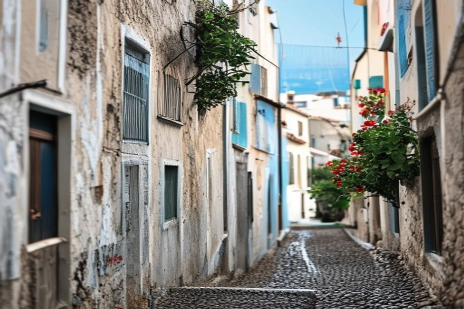

Funchal isn't one neighbourhood — it's four or five, each with a completely different rhythm. Here's what actually separates the Zona Velha, the Marina, Lido and São Martinho, and which one suits the trip you're planning.
What are Funchal's main neighbourhoods?
Most visitors end up choosing between four areas: the Zona Velha (Old Town), the Marina and city centre around Avenida Arriaga and Avenida do Mar, Lido to the west, and São Martinho, the quieter clifftop stretch beyond it. They sit along the same few kilometres of coastline, so the differences are less about distance and more about density — how many restaurants, how much foot traffic, how close you are to the water, and how much noise you're willing to trade for it.

Is the Zona Velha the best place to stay?
For nightlife and atmosphere, yes — the Zona Velha has the highest concentration of restaurants, bars and small guesthouses in the city, packed into narrow cobbled lanes with painted doors and Rua de Santa Maria running through the middle of it. It's a five-minute walk to the Mercado dos Lavradores and the harbourfront, and it's the one part of Funchal that still feels genuinely old. The trade-off is noise: weekend evenings get loud, terraces spill into the street, and rooms facing the main lanes rarely stay quiet past midnight. Choose it if you want to walk to dinner every night and don't mind the buzz outside your window.
What's around the Marina and Avenida do Mar?
This is Funchal's functional centre — the harbourfront promenade, the largest hotels, and Marina do Funchal itself, where the city's yachts, catamarans and private charter boats tie up. It's central without being as dense or loud as the Zona Velha next door, and it puts you within easy walking distance of both the Old Town and the cable car up to Monte. It's also the practical answer to a question a lot of visitors ask us directly: private boat trips from Funchal, including Chifbay's charters, leave from right here, so staying nearby means no transfer on the morning of your trip.
Is Lido good for a beach-style stay?
Lido is the closest Funchal gets to a resort strip, but it's not a sand-beach destination — almost nowhere in the city is. What Lido has instead is the Complexo Balnear do Lido, a large bathing complex of pools and platforms cut into the volcanic rock, plus a run of newer hotels a short walk from Praia Formosa's pebble beach further along the coast. It sits about 3km west of the centre, quieter and more spread out than the Zona Velha, with sea views instead of street life. It suits travellers who want swimming access without leaving the city, and don't mind a bus, taxi or a 30–40 minute walk into town for dinner.

What is São Martinho like?
São Martinho is the residential parish that stretches from around the cruise port out to Praia Formosa, and it's the quietest of the four areas by some distance. Large hotel complexes sit along its clifftop edge, and the 15th-century São Martinho Church, perched on a rise above the coast, gives some of the best panoramic views over Funchal and the Atlantic beyond it. It's a genuinely calm base — low traffic, friendly and safe by every account — but it trades that calm for distance: you're looking at a taxi, bus or a fairly committed walk to reach the Zona Velha's restaurants or the marina.
Which neighbourhood has the best restaurants?
Concentration-wise, the Zona Velha wins outright — it's where most of Funchal's tascas, seafood spots and late-opening kitchens cluster within a few hundred metres of each other. But good food isn't confined to one area: the Mercado dos Lavradores near the Marina is unbeatable for fresh produce and a fast lunch, and Lido and São Martinho's hotels both have their own respectable restaurants if you'd rather not travel after a day on the water.
How do you get between Funchal's neighbourhoods?
On foot, the Marina, Zona Velha and Lido link up along the Avenida do Mar promenade — it's a flat, pleasant walk of roughly 25–30 minutes from the marina out to Lido, less between the Marina and the Old Town. São Martinho is a longer walk, so most visitors use the Horários do Funchal bus network, a taxi, or Uber and Bolt, both of which operate reliably across the city. None of the four areas require a car if your trip is centred on Funchal itself.
None of these choices is wrong — they just optimise for different mornings. If your plan includes a day on the water, staying near the Marina removes one variable entirely: your boat, and most of what else you'll want, is a short walk away.